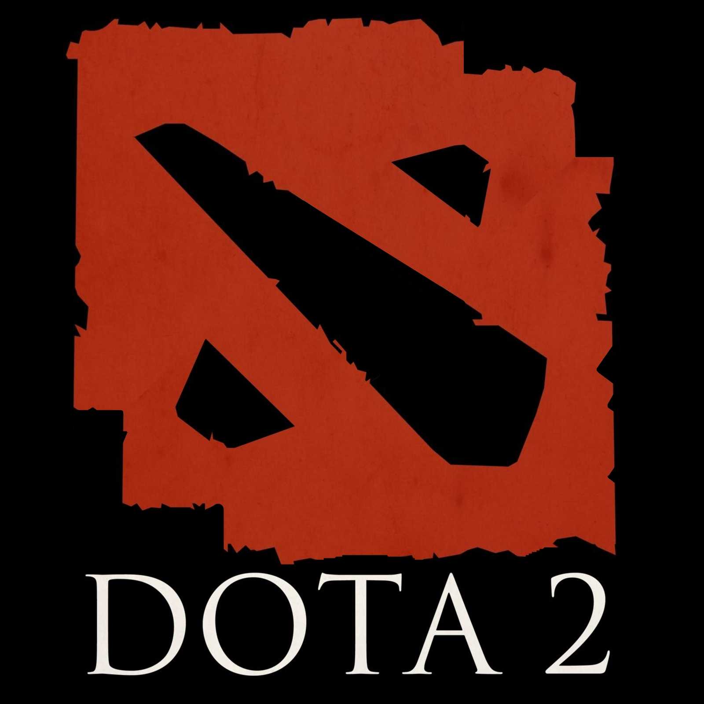
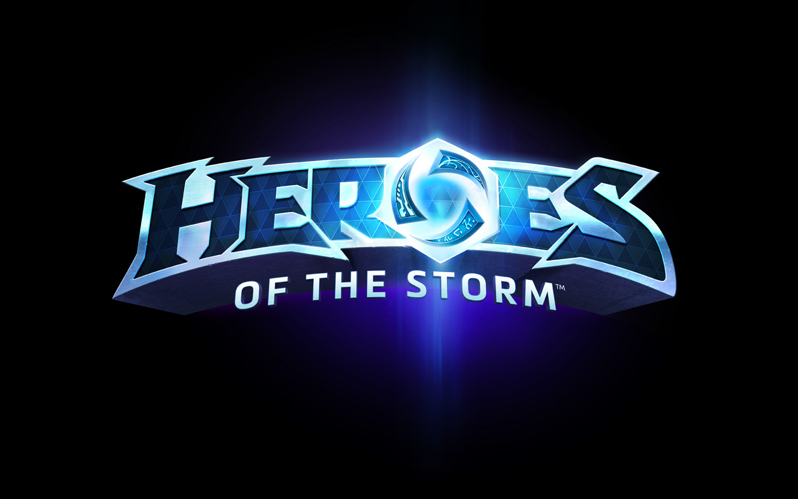
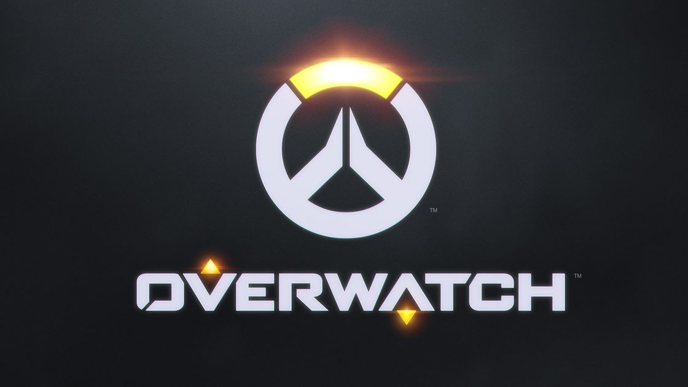
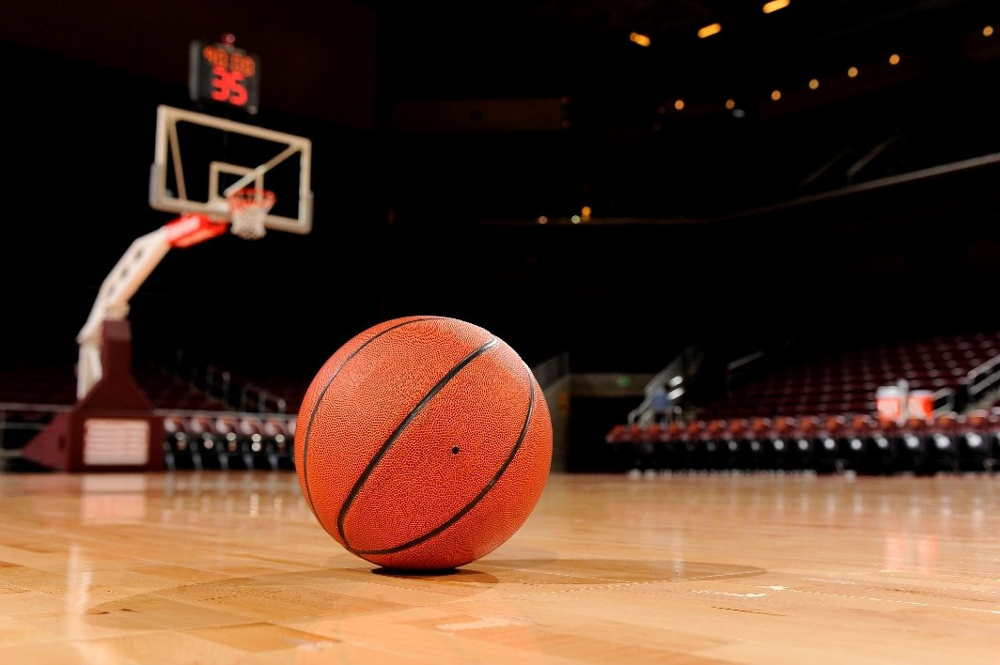
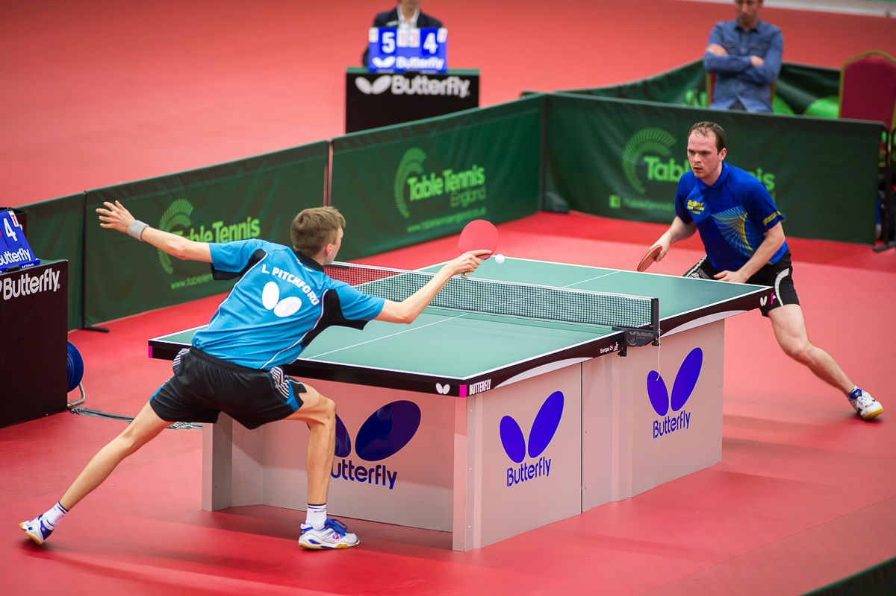

Список моих увлечений
- Dota 2
- Heroes of the Storm
- Overwatch
- Баскетбол
- Пинг-понг
Я люблю командные компьютерные игры, и некоторые спортивные игры.
Что мне в них нравится
- Помогают мне весело проводить время
- Развивают реакцию
- Помогают коммуницировать с людьми
Dota 2

Dota 2 — одна из моих любимых игр. Мне нравится стратегическая направленность игры, разнообразие героев и не слишком быстрый темп боёв. Разобравшись, как играть, Dota 2 становится очень затягивающей.
Ссылка на официальный сайт: Dota 2
Heroes of the Storm

Heroes of the Storm очень похожа на Доту со своими сильными и слабыми сторонами.
Плюсы HOTS:
- Больше уникальных для жанра механик
- Разнообразие карт и специальные события на них, влияющие на ход игры
- Простота освоения, благодаря которой в игру легче войти новичку
Минусы HOTS:
- Убитая соревновательная составляющая
- Мало русскоязычных игроков
Ссылка на страницу игры: Heroes of the Storm
Overwatch

Overwatch мне нравится из-за красивой картинки, и спокойного темпа относительно других геройских шутеров
Ссылка на официальный сайт: Overwatch
Баскетбол

Баскетбол — это моя любимая спортивная игра. Баскетбол помогает мне выплеснуть энергию, заняться кардио в кайф
Полезная ссылка: FIBA
Пинг-понг

Пинг-понг мне нравится за его скорость и необходимость хорошей реакции. Эта игра также идеально подходит для ненапряженной беседы в процессе
Полезная ссылка: ITTF
Любимые цитаты
-
Жизнь часто выбивает из меня всю дурь, но я знаю, где достать ещё
-
Если не знаешь как поступить, поступай как знаешь